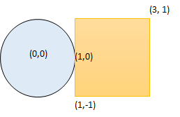
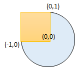

1401. 圆和矩形是否有重叠
把圆心逐维夹到矩形范围内得到矩形上离它最近的点，该点距离 ≤ r 就重叠（含相切与圆心在矩形内）。
思路
- 最近点
N = (clamp(cx, x1, x2), clamp(cy, y1, y2))：圆心在矩形内时N就是圆心本身（距离 0）。 - 判
|N − 圆心|² ≤ r²：平方比较避免开方；坐标 ≤ 10⁴，用long防乘法溢出。 - 「重叠」包含边界接触：相切（距离恰等于
r）也算true。
图解
最优解
1class Solution {2 public boolean checkOverlap(int radius, int xCenter, int yCenter, int x1, int y1, int x2, int y2) {3 // 把圆心逐维夹到矩形范围内，得到矩形上离圆心最近的点4 // 圆心已在矩形内时，夹完还是它自己，距离 05 int nx = Math.max(x1, Math.min(xCenter, x2));6 int ny = Math.max(y1, Math.min(yCenter, y2));7 long dx = nx - xCenter, dy = ny - yCenter;8 return dx * dx + dy * dy <= (long) radius * radius;9 }10}题目
给你一个以 (radius, xCenter, yCenter) 表示的圆和一个与坐标轴平行的矩形 (x1, y1, x2, y2) ，其中 (x1, y1) 是矩形左下角的坐标，而 (x2, y2) 是右上角的坐标。
如果圆和矩形有重叠的部分，请你返回 true ，否则返回 false 。
换句话说，请你检测是否 存在 点 (xi, yi) ，它既在圆上也在矩形上（两者都包括点落在边界上的情况）。
示例 1 ：

输入：radius = 1, xCenter = 0, yCenter = 0, x1 = 1, y1 = -1, x2 = 3, y2 = 1 输出：true 解释：圆和矩形存在公共点 (1,0) 。
示例 2 ：
输入：radius = 1, xCenter = 1, yCenter = 1, x1 = 1, y1 = -3, x2 = 2, y2 = -1 输出：false
示例 3 ：

输入：radius = 1, xCenter = 0, yCenter = 0, x1 = -1, y1 = 0, x2 = 0, y2 = 1 输出：true
提示：
1 <= radius <= 2000-104 <= xCenter, yCenter <= 104-104 <= x1 < x2 <= 104-104 <= y1 < y2 <= 104
题面取自力扣当前版本。
数据快照 2026-11-04。题面版权归力扣所有，本站点仅供本人学习使用，请勿对外发布。